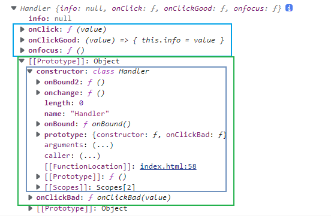
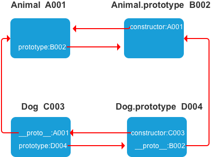

ES6 变量声明 var、let 和 const 的区别
var
变量提升
可以重复定义相同的变量
声明范围是函数作用域
在方法内部为局部变量，方法外为全局变量 (不加 var 在方法内外都是全局变量；在方法内时，需要先调用方法提示声明了全局变量)
let
同一作用域不可以重复定义相同的变量
没有声明变量之前不可以使用，没有变量提升
声明范围是块作用域
const
const声明暗示变量值是单一类型不可修改，JS运行时编译器会将其所有实例替换为实际的值，不会通过查询表进行变量查找。
使用 let 解决闭包问题 1 2 3 4 5 6 7 8 9 let arr = []for (var i = 0 ; i < 10 ; i++) {let temp = function (console .log (i)push (temp)0 ]() 1 ]()
将 for 循环内的 i 的 var 声明换成 let 声明（let 有局部作用域）
1 2 3 4 5 6 7 8 9 let arr = []for (let i = 0 ; i < 10 ; i++) {let temp = function (console .log (i)push (temp)0 ]() 1 ]()
解构（Destructuring） ES6 允许按照一定模式，从数组和对象中提取值，对变量进行赋值，这被称为解构（Destructuring），解构的本质属于“模式匹配”，只要等号两边的模式相同，左边的变量就会被赋予对应的值。如果解构不成功，变量的值就等于 undefined。
数组解构 从数组中提取值，按照对应位置，对变量赋值。
1 2 3 4 5 6 7 8 9 10 11 let [foo, [[bar], baz]] = [1 , [[2 ], 3 ]]console .log (foo, bar, baz) let [, , third] = ['foo' , 'bar' , 'baz' ]console .log (third) let [a, , b] = [1 , 2 , 3 ]console .log (a, b) let [x, y, ...z] = ['a' ]console .log (x, y, z)
不完全解构
1 2 let [a] = 'hello' console .log (a)
如果等号的右边不是数组（或者严格地说，不是可遍历的结构），那么将会报错。
1 2 3 4 let [foo] = undefined let [foo] = 1 let [foo] = false
等号右边的值，要么转为对象以后不具备 Iterator 接口（前五个表达式），要么本身就不具备 Iterator 接口（最后一个表达式）。
原生具备 Iterator 接口的数据结构：Array、Map、Set、String、TypedArray、arguments、NodeList 等
集合解构 ... 扩展运算符接受剩余的数据。
1 2 3 4 5 6 7 let [head, ...tail] = [1 , 2 , 3 , 4 ]console .log (head, tail) let old = [1 , 2 , 3 , 4 ]let [...arr] = old console .log (arr) console .log (arr === old)
默认值 undefined，默认值才会生效。默认值可为函数。
1 2 let [x, y = 'b' ] = ['a' ]console .log (x, y)
对象解构 等号左边的变量放到大括号内部，匹配右侧数组中的元素。对象的属性没有次序，变量必须与属性同名，才能取到正确的值。
1 let { foo, bar } = { foo : 'aaa' , bar : 'bbb' }
重命名解构 如果变量名与属性名不一致，必须进行重命名。
1 let { foo : baz } = { foo : 'aaa' , bar : 'bbb' }
嵌套解构 1 2 3 4 5 6 7 8 9 10 11 12 13 14 15 16 17 let obj = { p : ['Hello' , { y : 'World' }] }let {p : [x, { y }],let node = {personalInfo : {basicInfo : {name : 'mike' ,age : 25 level : 3 let { personalInfo : { basicInfo } } = node;console .log (basicInfo.name );
嵌套解构时，要注意深层内容不存在时，会抛出错误，解构终止，只执行一部分。
默认值 默认值生效的条件是，对象的属性值严格等于 undefined
1 2 3 4 let { x : y = 3 } = { x : 1 }let { x : y = 3 } = {}
运算符… …用到左侧是聚合，…用到右侧就是展开
1 2 3 4 5 6 7 8 9 10 11 12 13 14 let obj = { name : 'zhangsan' , age : 12 }let { ...person } = objgender = '1' console .log (person) console .log (person === obj) let stu = {gender : '1' ,console .log (stu) let { gender = '2' , ...zs } = stuconsole .log (gender, zs)
字符串解构 等号左边的变量如果放在中括号内进行的类似于数组解构，从字符串中获取指定字符；如果放在大括号内进行的类似于对象解构，从实例属性获方法中解构。
1 2 3 4 5 6 7 const [a, b, c, d, e] = 'hello' let { length : len } = 'hello' console .log (len) let [...arr] = 'hello' console .log (arr)
数值解构 等号左边的变量放在大括号中进行解构，可以获取到数值包装器构造函数原型中指定的方法。
1 2 3 let { valueOf : abd } = 12 console .log (abd)
布尔类型解构 等号左边的变量放在大括号中进行解构，可以获取到布尔包装器构造函数原型中指定的方法。
解构的好处
变量交换值
1 2 3 4 let a = 1 ,2 ;console .log (a,b)
让函数返回多个值
1 2 3 4 5 6 7 8 9 10 11 12 13 14 function func1 (return [1 , 2 , 3 ];let [a, b, c] = func1 ();console .log (a, b, c); function func2 (return {a : 1 ,b : 2 let { a, b } = func2 ();console .log (a, b);
让函数参数有所对应
1 2 3 4 5 6 7 8 9 function add (a,b ){console .log (a,b)add (1 ,2 )function add2 ({b,a} ){console .log (a,b)add2 ({a :1 ,b :2 })
提取 JSON 数据
1 2 3 4 5 6 7 let jsonData = {'name' : "echo" ,'age' : 26 ,'address' : "深圳" let { name, age, address } = jsonData;console .log (name, age, address);
为函数形参添加默认值
1 2 3 4 5 function add ({ a = 1 , b = 2 } = {} ) {console .log (a + b);add (); add ({ a : 4 , b : 5 });
遍历 Map 解构
1 2 3 4 5 6 7 const map = new Map ();set (1 , 2 );set ("a" , "b" );console .log (map);for (let [key, value] of map) {console .log (key + "is" + value);
模块引入方法
1 const { SourceMapConsumer , SourceNode } = require ("source-map" );
常用扩展 对象扩展 对象增强语法 1 2 3 4 5 6 7 8 9 10 11 12 13 14 15 const name = 'terry' ;const ageValue = 'age' ;const sayNameValue = 'sayName' ;let foo = {sayName (console .log ('my name is' , this .name )18 ,
对象 API 拓展 Object.is(value1, value2) 判断两个值是否为同一个值。"" == false 为 true；
1 2 3 4 5 6 7 console .log (-0 == +0 ) console .log (-0 === +0 ) console .log (Number .NaN == NaN ) console .log (Number .NaN === NaN ) console .log (Object .is (Number .NaN , NaN )) console .log (Object .is (-0 , +0 )) console .log ('' == false )
Object.assign(target, …sources) 用于将所有可枚举属性的值从一个或多个源对象分配到目标对象。
Object.getPrototypeOf(obj) 返回指定对象的原型（内部 Prototype 属性的值），如果没有继承属性，则返回 null 。
Object.setPrototypeOf(obj, prototype) obj：要设置其原型的对象
Object.keys(obj) 获取所有可枚举属性名，返回一个表示给定对象的所有可枚举属性的字符串数组。
1 2 3 4 5 6 7 8 9 10 11 12 13 14 15 16 let anObj = { 100 : 'a' , 2 : 'b' , 7 : 'c' }console .log (Object .keys (anObj)) let myObj = Object .create (getFoo : {value : function (return this .foo console .log (Object .keys (myObj)) foo = 1 console .log (Object .keys (myObj))
Object.values(obj) 获取所有的可枚举属性值，返回一个给定对象自身的所有可枚举属性值的数组。
1 2 3 4 5 6 7 8 9 10 11 12 let my_obj = Object .create (getFoo : {value : function (return this .foo foo = 'bar' console .log (Object .values (my_obj))
Object.entries(obj) 获取所有的可枚举属性名和属性值键值对，返回一个给定对象自身可枚举属性的键值对数组。
1 2 3 4 5 6 7 8 9 10 11 12 const myObj = Object .create (getFoo : {value (return this .foo foo = 'bar' console .log (Object .entries (myObj))
函数扩展 函数参数 设置默认值 函数的参数设置默认值，即直接写在参数定义的后面。通常情况下，定义了默认值的参数，应该是函数的尾参数。
1 2 3 4 function fun (x, y = 'World' ) {console .log (x, y) fun (1 )
参数解构 参数默认值与解构赋值的默认值结合使用。
1 2 3 4 5 function foo ({ x, y = 5 } ) {console .log (x, y)foo ({ x : 1 })
rest 参数 用于获取函数的多余参数得到一个数组
1 2 3 4 function add (...values ) {console .log (values) add (2 , 5 , 3 )
箭头函数
没有 this（this指向所处上下文对象this指向）、super、arguments
不能通过 new 关键字调用
没有原型 prototype
不可以改变 this 指向
不支持重复的命名参数
1 2 3 4 5 6 7 8 9 10 11 12 13 14 15 16 17 18 19 20 21 22 let obj = {name : 'terry' ,say1 : function (console .log (this .name )say2 (console .log (this .name )say3 : () => {console .log (this ) say4 (return () => {console .log (this ) say1 ()say2 ()say3 ()say4 ()()
数组扩展 拓展运算符 (…) 将一个数组转为用逗号分隔的参数序列
1 2 3 4 5 6 7 8 9 10 11 12 let arr1 = [1 , 2 , 3 ]let arr2 = [4 , 5 , 6 ]let arr = [...arr1, ...arr2]console .log (arr)let temp = [...'hello' ]console .log (temp)
数组 API 拓展 Array.from() 从一个类似数组（拥有 length 属性）或可迭代对象（可获得对象中的元素）创建一个新的，浅拷贝的数组实例。
Array.from(被转换的对象，新数组每个元素都执行的回调函数，执行回调函数时的 this 对象)
1 2 3 4 function f (return Array .from (arguments )console .log (f (1 , 2 , 3 ))
Array.of() 创建一个具有可变数量参数的新数组实例，而不考虑参数的数量或类型。
1 2 3 4 5 6 Array .of (7 ) Array .of (1 , 2 , 3 ) Array .of (undefined ) Array (7 ) Array (1 , 2 , 3 )
Array.prototype.find() 获取元素，返回数组中满足提供的测试函数的第一个元素的值。否则返回 undefined。
arr.find(执行的函数 (当前遍历元素，当前遍历到的索引，数组本身)，执行回调时 this 对象)
Array.prototype.findIndex() 返回数组中满足提供的测试函数的第一个元素的索引。若没有找到对应元素则返回 -1。
arr.findIndex(执行的函数 (当前遍历元素，当前遍历到的索引，数组本身)，执行回调时 this 对象)
1 2 3 4 5 6 7 8 9 10 11 12 let arr = [10 , 8 , 3 , 2 , 4 , 2 , 5 ]let resultNum = arr.find ((item, index ) => {return item === 2 console .log (resultNum) let resultIdx = arr.findIndex ((item, index ) => {return item === 2 console .log (resultIdx)
Array.prototype.includes() 找到一个元素是否存在于数组中
includes(要找的元素，开始查找的位置)
1 ;[1 , 2 , 3 ].includes (3 , -1 )
Array.prototype.fill() 用一个固定值填充一个数组中从起始索引到终止索引内的全部元素。不包括终止索引。返回修改后的数组。
fill(插入值，开始索引，结束索引)
1 ;[1 , 2 , 3 ].fill (4 , -3 , -2 )
Array.prototype.keys() 返回一个新的 Array Iterator 对象，该对象包含数组中每个索引的键。
1 2 var fruits = ['Banana' , 'Orange' , 'Apple' , 'Mango' ]keys ()
Array.prototype.values() 返回一个新的 Array Iterator 对象，该对象包含数组每个索引的值。
Array.prototype.entries() 返回一个新的 Array Iterator 对象，该对象包含数组每个索引的键/值对。
Symbol 类型 数据类型 Symbol，表示 独一无二 的值，是一种类似于字符串的数据类型，它是 JavaScript 语言的第七种数据类型，前六种是：undefined、null、布尔值（Boolean）、字符串（String）、数值（Number）、对象（Object）。symbol 的特点：
提供独一无二的值
Symbol 值作为对象属性名时，不能用点运算符，要用中括号表示法
Symbol 值作为对象属性名时，该属性不会出现在 for...in、for...of 循环中
Symbol函数 可以接受参数，表示对于这个唯一值的描述。即使参数一致，symbol 值也不一样。
1 2 3 4 5 6 7 8 9 10 11 12 13 14 15 16 17 18 19 let s = Symbol ()let s1 = Symbol ('hello' )console .log (s, s1) console .log (typeof s) let s1 = Symbol ()let s2 = Symbol ()let s1 = Symbol ('foo' )let s2 = Symbol ('foo' )
Symbol.prototype.description 获取 Symbol 的描述。如果没有描述则返回 undefined。
Symbol 的应用 给对象内追加属性
1 2 3 4 5 6 7 8 let obj = {name : 'ronda' ,let tempName = Symbol ('name' )'张三' console .log (obj[tempName])
消除魔术字符串
魔术字符串指的是，在代码之中多次出现、与代码形成强耦合的某一个具体的字符串或者数值。
1 2 3 4 5 6 7 8 9 10 11 12 13 14 function getArea (shape, options ) {let area = 0 switch (shape) {case 'Triangle' : 0.5 * options.width * options.height break return areagetArea ('Triangle' , { width : 100 , height : 100 })
字符串 Triangle 是一个魔术字符串。与代码形成“强耦合”，不利于将来的修改和维护。
1 2 3 4 5 6 7 8 9 10 11 12 13 14 15 const shapeType = {triangle : Symbol (), function getArea (shape, options ) {let area = 0 switch (shape) {case shapeType.triangle :0.5 * options.width * options.height break return areagetArea (shapeType.triangle , { width : 100 , height : 100 })
把 Triangle 写成 shapeType 对象的 triangle 属性
symbol 属性名的遍历 Symbol 作为属性名，遍历对象的时候，该属性不会出现在 for...in、for...of 循环中，也不会被 Object.keys()、Object.getOwnPropertyNames()、JSON.stringify() 返回。
Object.getOwnPropertySymbols() 方法，可以获取指定对象的所有 Symbol 属性名。该方法返回一个数组，成员是当前对象的所有用作属性名的 Symbol 值。
1 2 3 4 5 6 7 8 9 10 11 const obj = {}let a = Symbol ('a' )let b = Symbol ('b' )'Hello' 'World' const objectSymbols = Object .getOwnPropertySymbols (obj)
Reflect.ownKeys() 方法可以返回所有类型的键名，包括常规键名和 Symbol 键名。
1 2 3 4 5 6 7 8 let obj = {Symbol ('my_key' )]: 1 ,enum : 2 ,nonEnum : 3 ,Reflect .ownKeys (obj)
Symbol.for()&&Symbol.keyFor() 全局 symbol 注册表中的一个记录结构：
字段名
字段值
[[key]]
一个字符串，用来标识每个 symbol
[[symbol]]
存储的 symbol 值
Symbol.for(key) 根据给定的键 key，来从运行时的 symbol 注册表中找到对应的 symbol。
1 2 3 4 5 6 7 8 9 10 Symbol .for ('foo' ) Symbol .for ('foo' ) Symbol .for ('bar' ) === Symbol .for ('bar' ) Symbol ('bar' ) === Symbol ('bar' ) let sym = Symbol .for ('mario' )toString ()Symbol .for ('mdn.foo' )Symbol .for ('mdn.bar' )
Symbol.keyFor(sym) 用来获取全局 symbol 注册表中与某个 symbol 关联的键。
1 2 3 4 5 6 7 8 9 let globalSym = Symbol .for ('foo' )Symbol .keyFor (globalSym) let localSym = Symbol ()Symbol .keyFor (localSym) Symbol .keyFor (Symbol .iterator )
集合 Set 集合 初始化 Set 类似于数组，但是成员的值都是唯一的
1 2 3 let arr = [...new Set ([1 , 2 , 4 , 4 ])]console .log (arr)
Set API Set.prototype.size ：返回 Set 实例的元素总数Set.prototype.forEach((currentValue,currentKey[,set])=>{},this)
1 2 3 4 5 6 7 8 9 10 11 12 13 14 15 16 17 18 19 20 21 22 let set = new Set () add ('hello' ) add ('world' ) forEach ((value, key, set ) => {console .log (value, key, set)console .log (set) console .log ('Set实例的元素总数：' , set.size ) console .log (set.keys ()) console .log (set.values ()) console .log (set.entries ()) delete ('hello' ) console .log (set) console .log (set.has ('world' )) clear ()console .log (set)
Map 集合 初始化 Map 对象保存键值对，并且能够记住键的原始插入顺序。任何值 (对象或者原始值) 都可以作为一个键或一个值。Objects 和 maps 的比较 同： 都允许按键存取一个值、删除键、检测一个键是否绑定了值。异：
Map 默认情况不包含任何键。只包含显式插入的键。键可以是 任意值
key 是有序的
键值对个数可以通过 size 属性获取
可以直接被迭代
Map API（与 set 类似） Map.prototype.size ：返回 Map 对象的键/值对的数量。
1 2 3 4 5 6 7 8 9 10 11 12 13 14 15 16 17 18 19 20 21 22 23 let myMap = new Map ()let keyObj = {}let keyFunc = function (let keyString = 'a string' set (keyString, "和键'a string'关联的值" )set (keyObj, '和键keyObj关联的值' )set (keyFunc, '和键keyFunc关联的值' )size get (keyString) get (keyObj) get (keyFunc) get ('a string' ) get ({}) get (function (
序列化和反序列化
1 2 3 4 5 6 7 8 9 10 11 12 13 14 15 16 17 18 19 20 21 22 const myMap = new Map (['a' , 1 ],'b' , 2 ],'c' , 3 ],'d' , 4 ],'e' , 5 ]console .log (myMap);const stringifyMap = JSON .stringify (myMap, (key, value ) => {if (value instanceof Map ) {return Object .fromEntries (value);return value;console .log (stringifyMap);const parseMap = JSON .parse (stringifyMap, (key, value ) => {if (value && typeof value === 'object' ) {return new Map (Object .entries (value));return value;console .log (parseMap);
Class 类 与函数声明不同：
不能提升；
类受块作用域限制；函数受函数作用域限制。
类各方法示例 原型成员：定义在原型上，通过实例对象调用，实例共享。
类方法（原型成员和静态成员）可用字符串、符号、计算的值作为键。
1 2 3 4 5 6 7 8 9 10 11 12 13 14 15 16 17 18 19 20 21 22 23 24 25 26 27 28 29 30 31 32 33 34 35 36 37 class Handler {constructor (this .info = null ;this .onfocus = function (console .log ('onfocus' );function (value ) {this .info = value;console .log ('onClick' );onClickBad (value ) {this .info = value;console .log ('onClickBad' );(value ) => {this .info = value;console .log ('onClickGood' );static onBound (console .log ('onBound' );static onBound2 = function (console .log ('onBound2' );Handler .onchange = function (console .log ('onchange' );

构造函数 constructor 方法是类的默认方法，通过 new 命令生成对象实例时，自动调用该方法。一个类必须有 constructor 方法，如果没有显式定义，一个空的 constructor 方法会被默认添加。
实例属性和方法 定义在类体中的属性称为实例属性，定义在类体中的方法称为实例方法。
1 2 3 4 5 6 7 8 9 10 11 12 13 14 15 16 17 18 19 class Person {'hello' constructor (name, age ) {this .name = namethis .age = agethis .sayName = function (console .log ('i am ' , this .name )let p1 = new Person ('zhansan' , 22 )let p2 = new Person ('lisi' , 23 )console .log (p1.sayName === p2.sayName ) console .log (p1.name ) console .log (p1.temp ) sayName ()
原型属性和方法 在构造函数的原型对象上存在的属性和方法。
1 2 3 4 5 6 7 8 9 10 11 12 13 14 15 16 17 18 class Person {constructor (name, age ) {this .name = namethis .age = agesayName (console .log ('i am ' , this .name )Person .prototype temp = 'hello' let p1 = new Person ('zhangsan' , 22 )let p2 = new Person ('lisi' , 23 )sayName () console .log (p1.sayName === p2.sayName ) console .log (p1.temp ) console .log (p2.temp )
静态属性和方法 通过 static 关键字来定义静态属性和静态方法。this 指向当前类。
1 2 3 4 5 6 7 8 9 10 11 12 class Person {static num = 200 static number (console .log (this ) return this .num console .log (Person ) console .log (Person .number ()) console .log (Person .num )
继承 class 可以通过 extends 关键字实现继承。constructor 方法中调用 super 方法，否则新建实例时会报错。this 对象，必须先通过父类的构造函数完成塑造，得到与父类同样的实例属性和方法，然后再对其进行加工，加上子类自己的实例属性和方法。
1 2 3 4 5 6 7 8 9 10 11 12 13 14 15 16 class Animal {constructor (name ) {this .name = namesayName (console .log ('my name is ' , this .name )class Dog extends Animal {constructor (name, age ) {super (name)this .age = agelet dog = new Dog ('乐乐' , '1' )sayName ()
extends 支持在类表达式中使用：let Bar = class extends Foo {}。proto 属性，因此同时存在两条继承链proto 属性，表示构造函数的继承，总是指向父类。proto 属性，表示方法的继承，总是指向父类的 prototype 属性。

super 关键字
派生类在构造函数中使用 this 之前必须调用 super()；
super 关键字只能出现在派生类构造函数和静态方法中；
super 不能单独引用，要么调用父类构造函数，要么引用静态方法；
没有定义类构造函数，实例化派生类时，会调用 super() 并将所有传入派生类的参数传入
派生类显示声明构造函数时，要么调用 super()，要么返回一个对象。
在构造函数中
1 2 3 4 5 6 7 8 9 10 11 12 13 14 15 16 17 18 19 20 21 class A {constructor (this .q = 2 p (return 2 class B extends A {constructor (super ()console .log (super .p ()) console .log (super .q ) let b = new B ()
在静态方法中
1 2 3 4 5 6 7 8 9 10 11 12 13 14 15 16 17 18 class A {static num = 200 constructor (this .num = 20 static number (return this .num class B extends A {static getNumber (return super .number ()console .log (B.getNumber ())
抽象基类 1 2 3 4 5 6 7 8 9 10 11 12 13 class Vehicle {constructor (if (new .target === Vehicle ) {throw new Error ('Vehicle cannot be directly instantiated' );if (!this .foo ) { throw new Error ('Inheriting class must define foo()' );
继承内置类型 内置类型的方法有时会返回新的实例，默认情况返回的实例与原始实例类型一致。
1 2 3 4 5 6 7 8 9 10 11 12 13 14 15 16 17 18 19 20 21 class SuperArray extends Array {} let a1 = new SuperArray (1 , 2 , 3 , 4 , 5 ); let a2 = a1.filter (x =>2 )) console .log (a1); console .log (a2); console .log (a1 instanceof SuperArray ); console .log (a2 instanceof SuperArray ); class SuperArray extends Array { static get [Symbol .species ]() { return Array ; let a1 = new SuperArray (1 , 2 , 3 , 4 , 5 ); let a2 = a1.filter (x =>2 )) console .log (a1); console .log (a2); console .log (a1 instanceof SuperArray ); console .log (a2 instanceof SuperArray );
类混入 (不常用，多用组合) extends 后支持表达式（可解析为一个类或一个构造函数），实现继承多个类。
1 2 3 4 5 6 7 8 9 10 11 12 13 14 15 16 17 18 19 20 class Vehicle {} let FooMixin = (Superclass ) => class extends Superclass { foo (console .log ('foo' ); let BarMixin = (Superclass ) => class extends Superclass { bar (console .log ('bar' ); let BazMixin = (Superclass ) => class extends Superclass { baz (console .log ('baz' ); function mix (BaseClass, ...Mixins ) { return Mixins .reduce ((accumulator, current ) => current (accumulator), BaseClass ); class Bus extends mix (Vehicle , FooMixin , BarMixin , BazMixin ) {}
实现原理（基于 Function）
使用严格模式 use strict
必须使用 new 关键字调用（new.target)
类的实例属性无法被遍历
1 2 3 4 5 6 7 Object .defineProperty (Example .prototype 'func' , { value : function (enumerable : false
迭代器 迭代器/遍历器（Iterator）就是这样一种机制。它是一种接口，为各种不同的数据结构提供统一的访问机制。任何数据结构只要部署 Iterator 接口，就可以完成遍历操作（即依次处理该数据结构的所有成员）。
遍历器对象本质上，就是一个指针对象。Iterator 的作用：
为各种数据结构，提供一个统一的、简便的访问接口；
使得数据结构的成员能够按某种次序排列；
ES6 创造了一种新的遍历命令 for...of 循环，Iterator 接口主要供 for...of 消费。
原生具备 Iterator 接口的数据结构：
迭代器协议 定义了产生一系列值的标准方式。一个对象必须实现 next() 方法，才能成为迭代器。next() 方法必须返回一个对象，该对象应当有两个属性： done 和 valuedone（boolean）如果迭代器可以产生序列中的下一个值，则为 falsevalue 迭代器返回的任何 JavaScript 值
1 2 3 4 5 6 7 8 let arr = ['a' , 'b' , 'c' ]let iterator = arr[Symbol .iterator ]()console .log (iterator + '' ) console .log (iterator.next ()) console .log (iterator.next ()) console .log (iterator.next ()) console .log (iterator.next ())
遍历
使用迭代器的 next 方法遍历 someString 的迭代器对象
1 2 3 4 5 6 7 8 let someString = 'hi' let iterator = someString[Symbol .iterator ]()let resultwhile (!(result = iterator.next ()).done ) {console .log (result)
因为 someString 是字符串，本身部署了 Iterator 接口，可以使用 for-of 遍历 someString
1 2 3 4 let someString = 'hi' for (let key of someString) {console .log (key)
异步编程 Promise 承诺 Promise 是异步编程的一种解决方案，比传统的解决方案（回调函数和事件）更合理和更强大。Promise 提供统一的 API，各种异步操作都可以用同样的方法进行处理。
实例化 Promise 构造函数接受一个函数作为参数，该函数的两个参数分别是 resolve 和 reject。它们是两个函数，由 JavaScript 引擎提供。pending（进行中） 、fulfilled（已成功） 和 rejected（已失败） 。状态发生改变之后就凝固了，不会再变了，会一直保持这个结果，这时就称为 resolved（已定型） 。
1 2 3 4 5 6 7 8 9 10 const promise = new Promise (function (resolve, reject ) { if (){ resolve (value); else { reject (error);
原型方法 定义在 Promise.prototype 中的方法，通过 Promise 实例可以直接调用。
Promise.prototype.then() 两个函数作为参数（成功执行函数，失败执行函数）
1 2 3 4 5 6 7 8 9 10 11 12 13 14 15 16 17 18 19 new Promise ((resolve, reject ) => {resolve ('成功1' );then ((value ) => { console .log ('成功2' )return 123 (reason ) => { console .log ('失败2' );then ((value ) => {console .log ('成功3' );(reason ) => {console .log ('失败3' );
不传 onResolved() 的规范写法：p2.then(null, () => onRejected('p2'));。
1 2 3 4 5 6 let p10 = p1.then (() => { throw 'baz' ; }); setTimeout (console .log , 0 , p10); let p11 = p1.then (() => Error ('qux' )); setTimeout (console .log , 0 , p11);
onRejected() 会返回一个包装了错误的解决 Promise。
Promise.prototype.catch() 当状态由 pending 变为 rejected 的时候执行该回调函数。
1 2 3 4 5 6 7 promisethen (function (data ) { catch (function (err ) {
rejected 状态时一般使用 catch 方法，不在 then 方法中定义 rejected 状态的回调函数（catch 还可以捕获在 then 方法执行中存在的错误）
Promise.prototype.finally() 在 promise 结束时，无论结果是 fulfilled 或者是 rejected，都会执行指定的回调函数返回一个 Promise。
1 2 3 4 5 6 7 8 9 10 promisethen ( (data ) => { catch ( (err ) => {finally ( () => {console .log ('最终都会执行' )
静态方法 定义在 Promise 中的方法，通过 Promise 可以直接调用。
Promise.all([p1,p2]) 用于将多个 Promise 实例，包装成一个新的 Promise 实例fulfilled 时候，该实例的状态才为 fulfilled，此时 p1，p2 的返回值组成一个数组，传递给该实例的回调函数；只要 p1，p2 的返回值有一个变为 rejected，该实例状态为 rejected。
1 2 3 4 5 6 7 8 9 const promise1 = Promise .resolve (3 );const promise2 = 42 ;const promise3 = new Promise ((resolve, reject ) => {setTimeout (resolve, 100 , 'foo' );Promise .all ([promise1, promise2, promise3]).then ((values ) => {console .log (values);
Promise.race([p1,p2]) 用于将多个 Promise 实例，包装成一个新的 Promise 实例
1 2 3 4 5 6 7 8 9 10 11 const promise1 = new Promise ((resolve, reject ) => {setTimeout (resolve, 500 , 'one' );const promise2 = new Promise ((resolve, reject ) => {setTimeout (resolve, 100 , 'two' );Promise .race ([promise1, promise2]).then ((value ) => {console .log (value);
Promise.any([p1,p2]) 用于将多个 Promise 实例，包装成一个新的 Promise 实例fulfilled，该实例的状态为 fulfilled；p1，p2 状态都变为 rejected，该实例状态才为 rejected。
1 2 3 4 5 6 7 8 9 10 11 12 13 14 15 const pErr = new Promise ((resolve, reject ) => {reject ("总是失败" );const pSlow = new Promise ((resolve, reject ) => {setTimeout (resolve, 500 , "最终完成" );const pFast = new Promise ((resolve, reject ) => {setTimeout (resolve, 100 , "很快完成" );Promise .any ([pErr, pSlow, pFast]).then ((value ) => {console .log (value);
Promise.resolve() 用于将现有对象转化为 Promise 实例。幂等性 ：如果传入参数是一个 Promise，则执行空包装（p === Promise.resolve(p)）。
1 2 3 4 5 const promise1 = Promise .resolve (123 );then ((value ) => {console .log (value);
Promise.reject() 返回一个新的 Promise 实例，该实例的状态为 rejected。Promise.resolve() ，但没有幂等性。
1 2 3 4 5 Promise .reject (new Error ('fail' )).then (function (function (error ) {console .error (error);
扩展 取消期约 通过封装，将 resolve 暴露出来，调用 resolve 提前取消期约。
1 2 3 4 5 6 7 8 9 10 11 12 13 14 15 16 17 18 19 20 21 22 23 24 25 26 27 28 29 30 31 32 33 <button id ="start" > Start</button > <button id ="cancel" > Cancel</button > <script > class CancelToken { constructor (cancelFn ) { this .promise = new Promise ((resolve, reject ) => { cancelFn (() => { setTimeout (console .log , 0 , "delay cancelled" ); resolve (); }); }); } } const startButton = document .querySelector ('##start' ); const cancelButton = document .querySelector ('##cancel' ); function cancellableDelayedResolve (delay ) { setTimeout (console .log , 0 , "set delay" ); return new Promise ((resolve, reject ) => { const id = setTimeout ((() => { setTimeout (console .log , 0 , "delayed resolve" ); resolve (); }), delay); const cancelToken = new CancelToken ((cancelCallback ) => cancelButton.addEventListener ("click" , cancelCallback)); cancelToken.promise .then (() => clearTimeout (id)); }); } startButton.addEventListener ("click" , () => cancellableDelayedResolve (1000 )); </script >
期约进度通知 封装期约，添加通知函数。
1 2 3 4 5 6 7 8 9 10 11 12 13 14 15 16 17 18 19 20 21 22 23 24 25 26 27 28 29 30 class TrackablePromise extends Promise {constructor (executor ) {const notifyHandlers = [];super ((resolve, reject ) => {return executor (resolve, reject, (status ) => {map ((handler ) => handler (status));this .notifyHandlers = notifyHandlers;notify (notifyHandler ) {this .notifyHandlers .push (notifyHandler);return this ;let p = new TrackablePromise ((resolve, reject, notify ) => {function countdown (x ) {if (x > 0 ) {notify (`${20 * x} % remaining` );setTimeout (() => countdown (x - 1 ), 1000 );else {resolve ();countdown (5 );notify ((a ) => setTimeout (console .log , 0 , 'progress:' , a));then (() => setTimeout (console .log , 0 , 'completed' ));
Generator Generator 函数是 ES6 提供的一种异步编程解决方案特征：
function 关键字与函数名之间有个星号
函数内部使用 yield 表达式，可作为返回语句，返回的值可作为下次调用 next() 的第一个参数的值。
执行 Generator 函数的调用方法与普通函数一样，调用 Generator 函数后，返回一个迭代器对象。调用遍历器对象的 next 方法，内部指针就从函数头部或上一次停下来的地方开始执行，直到遇到下一个 yield 表达式（或 return 语句）为止。
1 2 3 4 5 6 7 8 9 10 function * helloWorldGenerator (yield 'hello' ; yield 'world' ; return 'ending' ; let hw = helloWorldGenerator ();console .log (hw.next ());console .log (hw.next ());console .log (hw.next ());console .log (hw.next ());
yield* 产生可迭代对象，关联迭代器返回的 done:true 的 value 。
1 2 3 4 5 6 7 8 9 10 11 12 13 14 15 16 function * genenator (yield * [1 , 2 , 3 ];function * genenator11 (for (const key of [1 , 2 , 3 ]) {yield keyfor (const i of genenator ()) {console .log (i);for (const i of genenator11 ()) {console .log (i);
return() 和 throw() 用于中止生成器。throw() 抛出错误时，若错误未被解决，则中止；反之，跳过这个值继续执行。
1 2 3 4 5 6 7 8 9 10 11 12 function * generatorFn (for (const x of [1 , 2 , 3 ]) { yield x; const g = generatorFn (); console .log (g.next ()); console .log (g.return (4 )); console .log (g.next ()); console .log (g.next ()); console .log (g.next ());
应用 generator 是实现状态机的最佳结构。
1 2 3 4 5 6 7 8 9 10 11 12 13 14 15 16 let flag = true ;function clock (if (flag){ console .log ("tick" );} else { console .log ("tock" ); } function * clock_generator (while (true ){ console .log ("tick" ); yield ; console .log ("tock" ); yield ; clock ();clock ();var cg=clock_generator ();next ();next ();
async 异步函数 async 函数是使用 async 关键字声明的函数。 async 函数是 AsyncFunction 构造函数的实例， 并且其中允许使用 await 关键字。
期待返回一个实现 thenable 接口的对象（非必须），会自动对该对象“解包”。
await 关键字只在 async 函数内有效。const userDetails = await Promise.all(users.map(user => user.getDetails()));
项目中常用：
1 2 3 4 5 async function foo (return await $.get ("http://47.106.244.1:8099/manager/category/findAllCategory" ); let f = foo ();
await 关键字会暂停函数内部之后的代码，推送异步任务到队列，然后继续执行函数外的同步代码，之后执行异步任务求值。
foo() 提供值的任务 –foo()
立即可用的值 6 的任务 –bar()
提供值 8 的任务 –foo()
1 2 3 4 5 6 7 8 9 10 11 12 13 14 15 16 17 18 19 20 21 22 23 24 async function foo (console .log (2 );console .log (await Promise .resolve (8 ));console .log (9 );async function bar (console .log (4 );console .log (await 6 );console .log (7 );console .log (1 );foo ();console .log (3 );bar ();console .log (5 );
异步策略 1. 实现 Java 中 Thread.sleep()
1 2 3 4 5 6 7 8 9 10 async function sleep (delay ) { return new Promise ((resolve ) => setTimeout (resolve, delay)); async function foo (const t0 = Date .now (); await sleep (1500 ); console .log (Date .now () - t0); foo ();
2. 利用并行执行 按顺序 收到每个期约的值。
1 2 3 4 5 6 7 8 9 10 11 12 13 14 15 16 17 18 19 20 21 22 23 24 25 26 27 28 async function randomDelay (id ) {const delay = Math .random () * 1000 ;return new Promise ((resolve ) => setTimeout (() => {console .log (`${id} finished` );resolve (id);async function foo (const t0 = Date .now ();const promises = Array (5 ).fill (null ).map ((_, i ) => randomDelay (i));for (const p of promises) {console .log (`awaited ${await p} ` );console .log (`${Date .now() - t0} ms elapsed` );foo ();
3. 串行执行期约 x = await fn()。4. 栈追踪与内存管理 Promise 的栈信息
1 2 3 4 5 6 7 8 9 10 11 12 function fooPromiseExecutor (resolve, reject ) {setTimeout (reject, 1000 , 'bar' );function foo (new Promise (fooPromiseExecutor);foo ();
async/await 的栈信息
1 2 3 4 5 6 7 8 9 10 11 function fooPromiseExecutor (resolve, reject ) {setTimeout (reject, 1000 , 'bar' );async function foo (await new Promise (fooPromiseExecutor);foo ();
代理与反射 代理 代理对象不能使用 instanceof ，因为 Proxy.prototype = undefined。
1 2 3 4 5 6 7 8 9 10 11 12 13 const target = { foo : 'bar' const handler = { get (trapTarget, property, receiver ) { console .log (trapTarget === target); console .log (property); console .log (receiver === proxy); const proxy = new Proxy (target, handler);
在代理对象上执行“取值”相关操作（proxy[property]、proxy.property 或 Object.create(proxy)[property] 等操作）时会触发 get() 捕获器。
问题和不足 1.this 问题
1 2 3 4 5 6 7 8 9 10 11 12 13 14 15 16 17 const wm = new WeakMap (); class User { constructor (userId ) { set (this , userId); set id (userId ) { set (this , userId); get id () { return wm.get (this ); const user = new User (123 ); console .log (user.id ); const userInstanceProxy = new Proxy (user, {}); console .log (userInstanceProxy.id );
实例对象使用目标对象作为标识，代理对象却尝试从自身取得实例。
1 2 3 const UserClassProxy = new Proxy (User , {}); const proxyUser = new UserClassProxy (456 ); console .log (proxyUser.id );
2.代理和内置槽位 [[NumberDate]] 内置槽位，这无法通过 get() 和 set() 访问，代理上也不存在该槽位，会抛出错误。
反射 简化原始行为。
1 2 3 4 5 6 7 8 9 10 11 12 13 14 const target = { foo : 'bar' const handler = { get (return Reflect .get (...arguments ); get : Reflect .get const proxy = new Proxy (target, handler); const proxy = new Proxy (target, Reflect );
1.反射 API 和对象 API
通常，Object 上的方法适用于通用程序，而反射方法适用于细粒度的对象控制与操作。
2.状态标记
Reflect.defineProperty()Reflect.preventExtensions()Reflect.setPrototypeOf()Reflect.set()Reflect.deleteProperty()
3.用一等函数替代操作符
Reflect.get()：可以替代 对象属性访问 操作符。Reflect.set()：可以替代 = 赋值操作符。Reflect.has()：可以替代 in 操作符或 with()。Reflect.deleteProperty()：可以替代 delete 操作符。Reflect.construct()：可以替代 new 操作符。
4.安全的应用函数 Function.prototype.apply.call(myFunc, thisVal, argumentList);。Reflect.apply(myFunc, thisVal, argumentsList); 避免。
`Reflect.apply(target, thisArg, args)
`Reflect.construct(target, args)
Reflect.get(target, name, receiver) Reflect.set(target, name, value, receiver) Reflect.defineProperty(target, name, desc) Reflect.deleteProperty(target, name) Reflect.has(target, name) Reflect.ownKeys(target) Reflect.isExtensible(target) Reflect.preventExtensions(target) Reflect.getOwnPropertyDescriptor(target, name) Reflect.getPrototypeOf(target) Reflect.setPrototypeOf(target, prototype)
规范
捕获不变式
可撤销代理
1 2 3 4 const { proxy, revoke } = Proxy .revocable (target, handler); console .log (proxy.foo ); console .log (target.foo ); revoke ();
代理模式
跟踪属性访问
隐藏属性
属性验证
函数和构造函数参数验证
数据绑定和可观察对象
参考资料 GitHub - ruanyf/es6tutorial: 《ECMAScript 6 入门》是一本开源的 JavaScript 语言教程，全面介绍 ECMAScript 6 新增的语法特性。